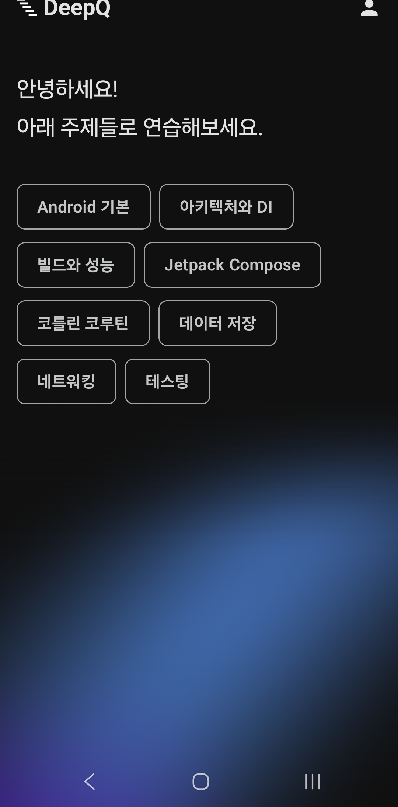
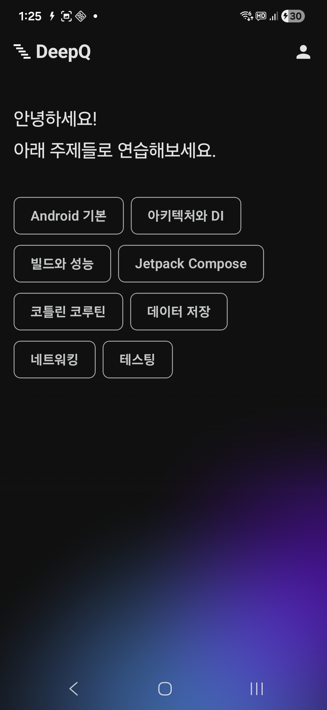
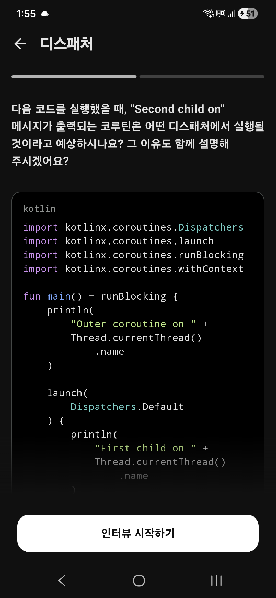
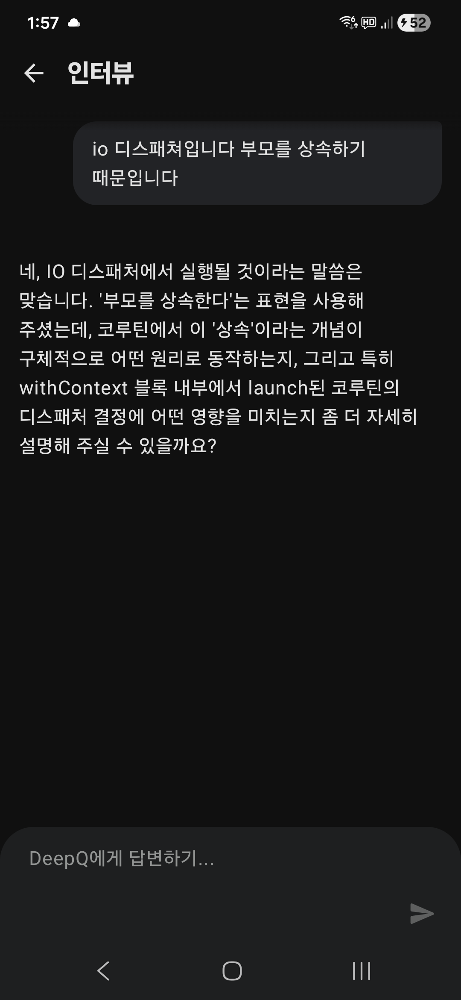

기술적 논리의 끝을 확인하는
집요한 인터뷰어, DeepQ
글로벌 빅테크의 엔지니어링 인터뷰 가이드라인을 데이터화하여 AI 면접관으로 구축했습니다. 최신 Gemini 모델이 당신의 답변에서 기술적 근거를 파고드는 심층 꼬리 질문을 생성하고 논리적 허점을 진단합니다.
실전보다 더 날카로운
AI 면접 경험
문제은행
AI가 빅테크에 나올만한 문제은행을
구축했습니다.

꼬리 질문
AI 가 날카로운 꼬리 질문을
던깁니다.

상세 피드백 리포트
면접이 끝나면 점수와 함께
구체적인 개선 피드백을 제공합니다.

답변 분석
부족한 부분과 잘한 부분을
문장 단위로 분석합니다.

성장 기록
나의 면접 기록과 실력 향상 과정을
한눈에 확인하세요.

핵심 기능
빅테크 표준 문항 설계
단순 지식 암기를 묻지 않습니다. 국내외 Top-tier 기업에서 요구하는 실무 설계 및 복잡도 최적화 역량을 검증할 수 있는 엄격한 문제 세트를 제공합니다.
2~4회 단계별 심층 추문
답변의 키워드를 실시간 파악하여 기술적 선택의 이유를 묻습니다. 꼬리 질문을 통해 당신이 가진 기술적 스택의 깊이와 한계를 명확히 측정합니다.
정밀 다차원 평가 리포트
Gemini 최신 모델 기반의 추론 엔진이 답변의 정확성, 논리적 일관성, 기술적 성숙도를 분석합니다. 주관적인 느낌이 아닌 객관적 지표로 피드백을 전달합니다.
LLM은 정답을 알고 있지만, DeepQ는 당신의 실력을 증명하게 합니다.